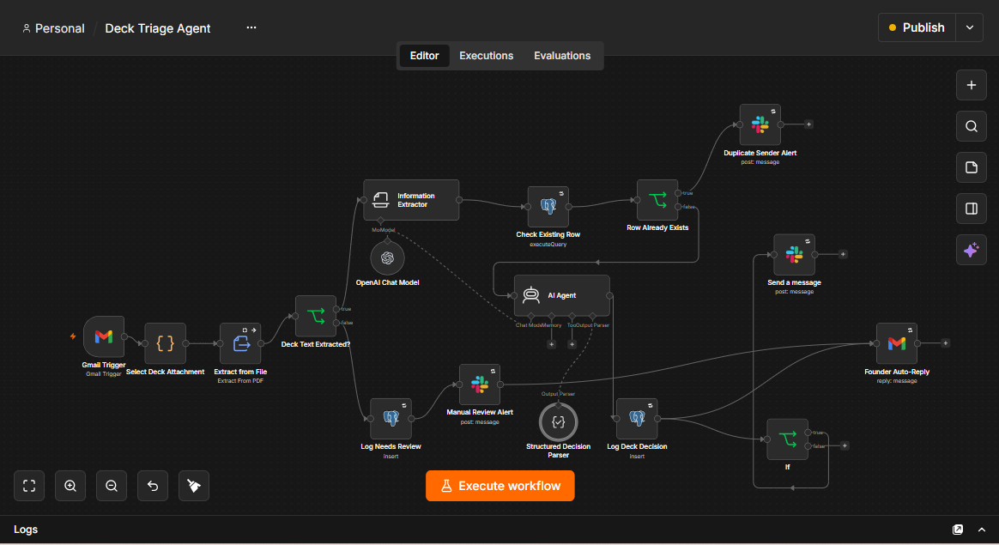

Emmanuel Onwuegbusi
AI Automation Workflows for Venture Capital
Real automations I've built to solve problems VCs actually have - starting with an agent that reads inbound pitch decks, triages them against an investment thesis, and makes sure no founder gets left hanging.
← Back to full portfolioWhat's here
Everything below is a real, working automation - not a mockup. I built and tested each one end-to-end against real triggers and real integrations, and I'm showing you exactly what it produced: a screenshot, a short walkthrough, and the workflow itself as a file you can download and inspect.
Workflows
Deck Triage Agent

VCs lose good deals the same boring way every time: decks pile up in an inbox and either sit unread or get skimmed inconsistently between partners. This agent watches the deals inbox, pulls the full text out of every incoming deck (it correctly picks the actual deck out of an email even when it isn't the first attachment), and scores it FIT, MAYBE, or REJECT against a real investment thesis - stage, check size, target sectors, hard disqualifiers, and whether there's an actual traction or team signal.
Every decision gets logged with the full reasoning behind it, posted to Slack for the team (REJECTs stay quiet, so nobody's pinged over the obvious no's), and every founder gets an honest, non-committal reply - nobody who emails in ever just hears nothing back. It's also built not to make things up: the model only reasons from the deck text it's actually given, anything too short or corrupted gets routed to a person instead of guessed at, and there's a guard against a deck trying to talk the model into approving itself.
Stack: n8n, Gmail API, OpenAI (GPT-4o-mini), PostgreSQL, Slack API, LangChain structured output parsing.